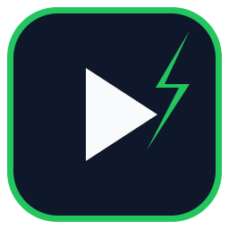

A free, cross-platform system-tray app that automatically clicks the Run, Always Run and Allow / Approve buttons in the Cursor IDE — and keeps track of how often it did.
Installer for x64 and ARM64. Install over an older version — your stats and templates are kept.
Download Installer (.exe) Chocolateychoco install cursor-auto-runner
AppImage (run anywhere, chmod +x), APT for Debian/Ubuntu, direct .deb download, or .pacman for Arch.
Download AppImage APT repository Download .deb Download .pacmansudo apt-get install cursor-auto-runner after adding the repo
Universal DMG (x64 + ARM64). Grants Screen Recording & Accessibility on first use.
Download DMG Homebrewbrew install --cask KurtStevenK/tap/cursor-auto-runner
Built via CI on tagged releases — DMGs can only be produced on macOS.